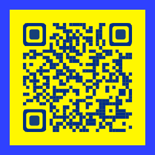

AURIC QREMPIEZA A DISEÑAR
Instala. Actualiza.
Diseña tus códigos.
Los instaladores oficiales aparecen en la sección de descargas cuando están disponibles en GitHub Releases del proyecto. La vista previa web funciona sin instalar la aplicación.
Windows
- Abre Descargas y selecciona Descargar para Windows cuando esté habilitado.
- Comprueba que descargaste un instalador EXE de Auric QR desde una publicación oficial.
- Abre el asistente y sigue sus pasos sin desactivar SmartScreen, Defender ni el antivirus.
- Cuando termine, abre Auric QR. Algunas versiones necesitan descargar componentes de escritorio durante la instalación inicial.
Android
- Cuando la aplicación tenga APK oficialmente publicado, el botón de Android se habilitará en la sección Descargas.
- Abre el APK desde Descargas y revisa la procedencia.
- Si Android solicita autorización para esa fuente específica, concédela solo si reconoces el archivo.
- Si la instalación falla, no borres datos de otras aplicaciones; conserva el mensaje exacto.
¿Por qué no puedo descargar Android?
Si el botón indica que todavía no está publicado, no hay un APK de producción verificado disponible en esa versión.
Actualizar
Conserva tus proyectos e instala una actualización compatible. Si no está publicada o presenta conflicto de firmas, evita reemplazar tu aplicación actual por versiones de prueba.
Tus proyectos y códigos
Guarda una copia de tus archivos antes de cambiar de equipo. Los códigos QR estáticos no dependen de un servidor de redirección de Auric QR.